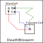

eNetwork 解析アルゴリズム
従来のリンク(セル間リンク、セル内リンク、ALSリンク）を、eNetwork に置き換えると様々な数独解析アルゴリズムが作れます。 ネットワーク探索を分離することで、それぞれのアルゴリズムは固有の処理に専念できます。 また、ネットワーク探索を専門化したことで、 リンクのタイプの拡充してもそれぞれの数独解析アルゴリズムの変更はなし/最小限とすることができます。
(1) NIceLoop
リンクのタイプを拡大し、起点ノード～起点ノードを結ぶリンク列をeNetworkに代えて、eNetwork_NiceLoopに発展させます。
求めたNiceLoopは同じですが、ネットワーク探索を分離したことにより、
NiceLoopのコードは 準備とループ形成の判定、結果のまとめ になります。
(2) eNW_DeathBlossom ( eNetwork_DeathBlossom)
DeathBlossomは、eNetwork_DeathBlossomに発展します。
XYZ-Wing => DeathBlossom => ALS Death Blossom => eNetwork_DeathBlossom
DeathBlossomは、Stemセルと他のセル・数字をリンクあるはALSで結ぶアルゴリズムです。
リンクで結ぶ状況をeNetworkに置き換えるのは、自然な拡張です。
なお、eNW_DeathBlossomとForce_Chain_Cellは、状態属性・ネットワーク方向が対称のアルゴリズムです。

(3) ForceChain(ForceChain_Cell, ForceChain_House, ForceChain_Contradiction)
ForceChain系のアルゴリズムは、放射型ネットワーク探索の第2フェーズの選択と確認処理、結果のまとめです。 ForceChain_Contradictionは、終点ノードの状態が”肯定かつ否定”の場合です。